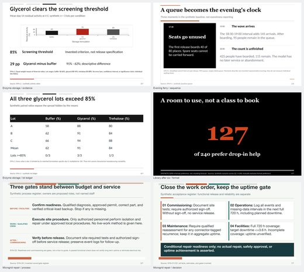
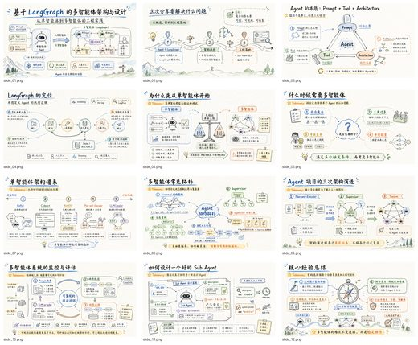
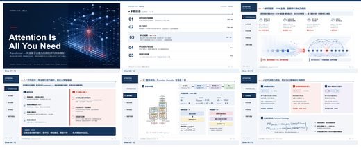
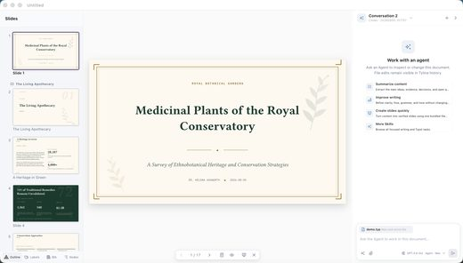

編集可能なPPTX83件


文字や図形を、あとから直す。
編集できる
PowerPoint
文字や図形を編集できる資料を制作。共同編集や、納品後の修正があるときに。
- こんな用途に
- 社内資料・共同編集・繰り返し更新
- 編集する場所
- PowerPointの文字・図形など
つくりたい資料に、合うスキルを。
見た目と使い方がわかる、6つのジャンル。
気になるカードから、日本語のツール一覧へ。
見比べて、用途で選ぶ
各画像は、代表的なツールの公開作例です。
画像を選ぶと、大きく見られます。

文字や図形を、あとから直す。
文字や図形を編集できる資料を制作。共同編集や、納品後の修正があるときに。

1枚の絵として、デザインする。
ページ全体を画像として制作。文字と絵のまとまりを重視する、企画やコンセプト資料に。
ブラウザで、見せ方までつくる。
ブラウザで表示するプレゼン資料。切り替えやアニメーションで、説明に動きを添えられます。
結論と根拠を、つなげて見せる。
提案・報告・ピッチ向けに、見出しと図表で情報を整理。資料の論点を組み立てたいときに。

長い資料を、発表のかたちに。
論文やPDF、記事から発表資料を制作。図表・数式・出典を扱う研究向けツールもあります。

構成も、デザインも、制作の流れから。
構成からデザイン、出力までを支援。複数のスキルや仕組みを組み合わせて制作できます。
選ぶときの、ひとつの軸
見た目が似ていても、編集できる範囲は違います。
分類と件数は、原版の一覧に基づいています。カードは各ジャンルの代表例で、すべてのツールが同じ見た目や機能を備えるわけではありません。作例の画像内の言語は、各原プロジェクトのものです。
日本語化しているのは、このガイドと紹介文です。ツール自体の日本語対応、導入条件、料金、編集できる範囲はリンク先で確認できます。導入時のセキュリティ評価と実測比較は、日本語の一覧に掲載しています。